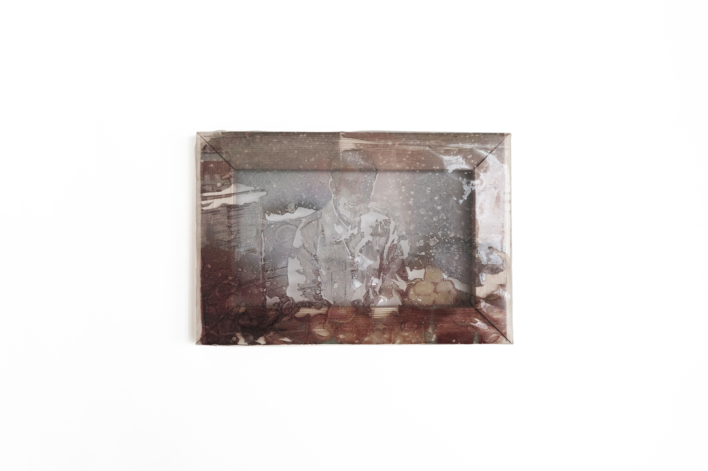
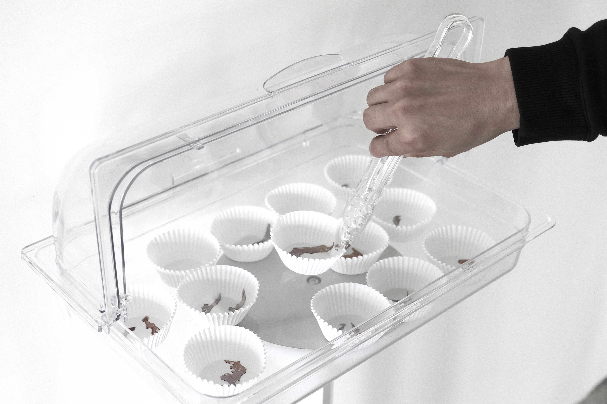
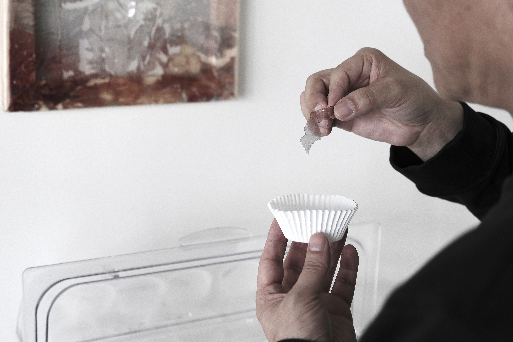

1/4
Artwork
Eating My Ancestor
- Year2026.03
- MediumGelatin, glycerin, food colouring, salt
- Dimensions
1. 20.0 x 30.0 x 3.6 cm
2. Dimension Variable -
Process
1. Food colouring on canvas
2. Canvas made from boiled gelatin and glycerin, sprinkled with salt
3. Edible cut-outs from canvas
I did not know how to grieve across distance, or whether what I was doing could be called grieving at all.
In Derrida's memorial texts to Louis Marin, mourning is characterised as that of "an interiorisation, an idealising incorporation, introjection, and consumption of the other."
Derrida, 'By Force of Mourning', 159